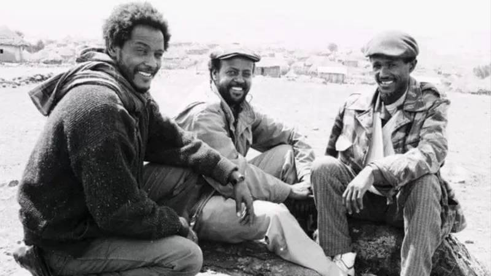

ጄኔራል ፃድቃን፡ ከትግራይ ኃይሎች ጀርባ ያለው ሞተር
8 ጥቅምት 2018

የቀድሞው የጦር ጄኔራል ፃድቃን ገብረ ትንሳኤ ለሁለተኛ ጊዜ ወደ ጦር ሜዳ ተመልሰዋል። በኢትዮጵያ መንግሥትና በትግራይ አማፂያን ኃይሎች መካከል የሚደረገው ጦርነትንም በዋነኝነት እየመሩ ያሉት ጄኔራሉ ናቸው ይላል የአፍሪካ ቀንድ ተንታኙ አሌክስ ደ ዋል።
የትግራይ አማፂ ኃይሎች አዛዥ ጄኔራል ፃድቃን ገብረ ትንሳኤ በአለም አቀፉ የፀጥታ ተንታኞች ዘንድ በአፍሪካ ካሉ ድንቅ የወታደራዊ ጦር ስልት አዋቂ ተደርገው ይቆጠራሉ። የ68 አመቱ ጄኔራል ትግላቸው የሚጀምረው የባዮሎጁ የዲግሪ መርሃ ግብራቸውን አቋርጠው ህወሃትን በተቀላቀሉበት ወቅት ነው። ጊዜውም በአውሮፓውያኑ 1976 ሲሆን በወቅቱም በመቶዎች የሚቆጠሩ የሽምቅ ተዋጊዎች የወቅቱን ገዥ መንግሥቱ ኃይለማርያምን ለመፋለም በገጠራማው የትግራይ ተራራ ላይ መሸጉ። ጄኔራሉ ባላቸው ትንታኔ፣ የድርጅታዊ አወቃቀር እውቀት እንዲሁም የበርካታ ታጋዮችን እምነት እንዲጣልባቸው መሆኑ ጋር ተያይዞ በአውሮፓውያኑ 1980 በዘመቻዎች የሚከበሩ አንደኛው የጦር አዛዥ እንዲሆኑ አስችሏቸዋል። ህወሃት ስልጣን ሊቆጣጠር ባለበት በ1983 ዓ.ም አቅም ያለው 100 ሺህ ሰራዊትን የያዘ ሲሆን ይህም መካናይዝድ ክፍለ ጦሮችንም አካቷል።
- "ሰዓረ ሙዚቃ በጣም ያዝናናው ነበር" ጄኔራል ፃድቃን ገብረ ትንሳዔ
- ከሬዲዮ ሞገድ አፈና እስከ ርዕሰ መስተዳድር፡ ደብረጽዮን ገብረሚካኤል ማናቸው?
- መንግሥት እና ህወሓት ስምምነት ላይ እንዳይደርሱ ሊያደርጉ የሚችሉ አራት ጉዳዮች
በግንቦት ወርም ጄኔራል ፃድቃን ህወሃትን በመምራት በወቅቱ የጦር አጋር ከነበሩት የኤርትራ ኃይሎች ጋር በመጣመር የኢትዮጵያን መዲና አዲስ አበባን ተቆጣጠሩ። በዚህም ጦርነት አገሪቱን ይመራ የነበራው የመንግሥቱ ኃይለ ማርያም አገዛዝ ተገረሰሰ።
ህወሃት አዲስ አበባን ከተቆጣጠረ በኋላም በሂልተን ሆቴል አካባቢ በሚገኝ አንድ የእንግዳ ማረፊያ ጄኔራሉ እንዲቆዩ ተደረጉ። በትግል የቆዩት ጄኔራሉ ከአስራ አምስት አመታት በኋላ አንሶላ ባለው አልጋ ላይ ለመጀመሪያ ጊዜ ተኙ። በሳቸውም የጦር አመራር የሽምቅ ተዋጊዎቹ አዲስ አበባን ግንቦት 20 ከተቆጣጠሩ በኋላ ከተማዋን በፍጥነት አረጋጉ። በገቡ በሶስተኛ ቀናቸውም ነው ለመንግሥት ሰራተኞች ደመወዝ እንዲሁም ጡረታ የተከፈለው።
የአልቃይዳ የጦር ሰፈር ከበባ
በቀጣዮቹ ሰባት አመታት ጄኔራል ፃድቃን ጦሩን በማዋቀር ጊዜያቸውን አሳልፈዋል። ከዚያም የአገሪቱ ጠቅላይ ኤታማዦር ሹም ማዕረግን አገኙ። ጄኔራሉ የኢትዮጵያን መከላከያ ይመሩ በነበረበት 10 አመታት ወቅት የህወሃት የጦር አዛዦች የበላዮች ነበሩ። ይህም ሁኔታ በጦሩ ዘንድ ያልተገባ የብሔር ስብጥር ነበር በሚልም ወቀሳን አስከትሏል። ስድስት በመቶ ከሚሆነው የትግራይ ህዝብ የመጡት የህወሃት አመራሮች የበላይ መሆን ጋር ነበር ትችቱ የተነሳው። ጄኔራል ፃድቃን ወደ ትምህርት አለሙም ተመልሰው በዩናይትድ ኪንግደም ኦፕን ዩኒቨርስቲ የድኅረ ምረቃቸውን በቢዝነስ አድሚኒስትሬሽን ዘርፍ ተከታትለዋል። በወቅቱ መምህራቸው የነበሩት ፕሮፌሰር ግራይሜ ሳልማን ስለ ቀድሞ ተማሪያቸው ሲናገሩ "በተለምዶ የጦር ጄኔራል ተብለው ከሚታወቁት የተለዩ ናቸው። ዝምተኛ፣ አዳማጭ፣ አሰላሳይ፣ አይነ አፋር የሚባሉ፣ አዕምሯቸው ክፍት የሆኑ ነገር ግን ጠንካራነት የሚንፀባረቅባቸው ናቸው" በማለት ምስክርነታቸውን ሰጥተዋል። በጊዜው ኢትዮጵያ ውስጥ ያለው የርስ በርስ ጦርነት ቢጠናቀቅም የአፍሪካ ቀንድ አለመረጋጋት ላይ ነበር። በአውሮፓውያኑ 1996 በሶማሊያ የሚገኘውን የአልቃይዳ የጦር ሰፈር ለመውረር ጦሩን ጄኔራሉ ላኩ። በዚህም አላበቃም የኦማር አልበሽርን ተቃዋሚ ለመደገፍ የሱዳንን ድንበር በማሻገር ሌላ ኃይል ልከዋል።
ከሰራዊቱ መባረር
የኤርትራው ፕሬዚዳንት ኢሳያስ አፈወርቂ ለኢትዮጵያ አደጋ ናቸው የሚለውን የጄኔራሉን ማስጠንቀቂያ በህወሃት አመራር ጠቅላይ ሚኒስትር መለስ ዜናዊ ችላ የተባለ ጉዳይ ነበር። በአውሮፓውያኑ 1998 የኢትዮ-ኤርትራ የድንበር ጦርነት ተነሳ። ጄኔራል ፃድቃንም የጦሩ ዋነኛ አቃጅ ነበሩ። ለብዙዎች ህይወት መጨፍጨፍ ምክንያት የሆነው ይህ ጦርነት ከሁለቱም ወገኖች 80 ሺህ ሰዎችን ገድሏል። በአውሮፓውያኑ ሰኔ 2000 የኢትዮጵያ መከላከያ የኤርትራን ወታደሮች በመስበር ድንበሩን ተሻገሩ። የጄኔራል ፃድቃን እቅድ የነበረው ወደ ኤርትራ መዲና አስመራ መገስገስ ነበር። ነገር ግን የወቅቱ ጠቅላይ ሚኒስትር መለስ ዜናዊ ዘመቻው እንዲቆምና የኢትዮጵያ የጦር አላማ ኤርትራን በማሸነፍ ተሳክቷል አሉ። ከጦርነቱ በኋላ ህወሃት በፓርቲው የፖለቲካ አቅጣጫ እንዲሁም ከጦርነቱ ጋር በተያያዘ በነበሩ አላማዎች ተሰነጠቀ። መለስም ጄኔራል ፃድቃንን ከጠቅላይ ኤታማዦር ሹምነታቸው አባረሩዋቸው። ለዘመናት ማንነታቸውን ከገነባው ጦር በድንገት ሲባረሩ፣ በህወሃት አመራሮች ሲገፉ እንዲሁም በደህንነት ኃይሎች በአይነ ቁራኛ ሲገቡ ጄኔራል ፃድቃን እንደ ግለሰብ ህይወትን ለመልመድ አዳገታቸው። በዚያን ወቅት ጦሮች ኤችአይቪን ለመቆጣጠር ሊያደርጉት ስለሚገባ ጥረት አንድ ሪፖርት ፅፈዋል። በዩናይድ ኪንግደም የአለም አቀፍ ልማት ዘርፍ የደቡብ ሱዳንንን መንግሥት እንዲያማክሩም ተቀጠሩ። ደቡብ ሱዳን ጦሯን ማዘመን ባለመቻሏ የደረሰባትን ውድቀትን ለመከላከልም ነው በፀጥታና በደህንነት ዘርፍ ጄኔራል ፃድቃን አማካሪ የሆኑት። ከዚህም በተጫማሪ በደቡብ ትግራይ በምትገኘው የትውልድ ቦታቸው ራያ የቢራ ፋብሪካን ያቋቋሙ ሲሆን የሆርቲካልቸር ቢዝነስን ጀመሩ።
የፀረ-ተጋሩ ስሜት መጎልበት
ከሶስት አመታት በፊት ወደ ስልጣን የመጡትን ጠቅላይ ሚኒስትር ዐብይን በመደገፋቸው ከቀድሞ የህወሃት ባልደረቦቻቸው ዘንድ ትችት ቢያስተናግዱም ጄኔራሉ ከጠቅላይ ሚኒስትሩ ጋር አብሬ ለመስራት ዝግጁ ነኝ አሉ። ከሁለት አመታት በፊት በጠቅላይ ሚኒስትር ዐብይና በህወሃት አመራሮች መካከልም ያለው ቅራኔ እንዲፈታ በማለት ይፋዊ ያልሆነ የአሸማጋይ ቡድን ተቀላቅለው ነበር። ነገር ግን ከአንድ አመት በፊት ጠቅላይ ሚኒስትሩ ቦታ አልሰጡትም በሚል ሃሳባቸውን ተውት። በመዲናዋ አዲስ አበባ የፀረ-ተጋሩ ስሜትም በከፍተኛ ሁኔታ እየጎለበተ ሲመጣ ጄኔራሉም ወደ ትግራይ መዲና መቀለ መኖሪያቸውን አደረጉ። በያዝነው አመት ጥቅምት 24፣ 2013 ጦርነት ሲጀመር ጄኔራሉም ከትግራይ አመራሮች ጋር ያላቸውን ልዩነት ወደ ጎን በማድረግ ጦርነቱን ለመመከት ኃይሉን ተቀላቀሉ። በህዝባቸው ላይ እየደረሰ ያለውን አሰቃቂ ጭፍጨፋ ያስደነገጣቸው በርካታ ወጣቶች ኃይሉን ለመቀላቀል ተመሙ። ወጣቶች ብቻ ሳይሆን በእድሜ የበለፀጉ እንዲሁም ከህወሃት ጋር ለአመታት ተጣልተው የነበሩ የቀድሞ አባላት ትግሉን ተቀላቀሉ። የኢትዮጵያ መንግሥት በበኩሉ ጄነራል ፃድቃንን ጨምሮ በሌሎች የትግራይ አመራሮች ላይ የእስር ትዕዛዝ አውጥቷል። በትግራይ ያለውን የፌደራል መከላከያ ዕዝ ጥቃት በማቀነባበር የሃገር ክህደት ፈፅመዋል በሚልም ነው የከሰሳቸው።
አስደናቂ ወታደራዊ ድል
ጦርነቱን የመመከት እንቅስቃሴ የተደረገው በትግራይ መከላከያ ኃይል ስም ነው። ይህ መከላከያ ህወሃትን ጨምሮ ሌሎች ህወሃት ያልሆኑ አባላትን አካቷል። ጄኔራል ፃድቃን ወደ ማዕከላዊ ዕዝ በመምጣት ለወታደራዊ ጉዳዮች በኃላፊነት እየሰሩ ነው። በጥር ወር ላይ "አፈር ልሰናል" ያሉት ጄኔራሉ በደቡባዊ ትግራይ ላይም እየተሳደዱ ነበር። በርካታ ወጣቶች በባዶ እግራቸውና በእጃቸው ብቻ መሸከም የሚችሉትን ጠመንጃ ይዘው ወደ ትግራይ ተራራማዎቹ ስፍራዎች ወጡ። ነገር ግን ይህንን ከበባ በመሰባበር የኢትዮጵያና የኤርትራን ጥምር ኃይሎች ባስደነቀ ሁኔታ ድል አደረጉ። በነዚህ ጦርነቶች ምን ያህል የትግራይ መከላከያ ኃይል አባላት እንደተገደሉም ሆነ እንደተጎዱ ጄኔራሉ አልተናገሩም። ለአራት ወራት ያህል ሲሰለጥኑ፣ ሲያደራጁና እንዲሁም ሲዋጉ ነበር። በግንቦት ወር ላይ ጄኔራል ፃድቃንና ሌሎች የጦር አዛዦች ከተጋጣሚያቸው ጋር እኩል የሆነ ኃይል መገንባት እንደቻሉም ግምታቸውን አስቀመጡ። ከሶስት ሳምንታት በፊት የቡድን ሰባት መሪዎች ሰብዓዊ የተኩስ አቁም ስምምነት እንዲደረግ ጥሪ አቀረቡ። ህወሃት በወቅቱ ባወጣው መግለጫ አስቸኳይ እርዳታ ለማሰራጨት ዝግጁነቱን ቢያስታውቅም ስለ ተኩስ አቁም ስምምነቱ ምንም አይነት አስተያየት ለመስጠት አልደፈረም። ሰኔ 10፣ 2013 ዓ.ም የትግራይ መከላከያ ኃይል ጦርነቱን ጀመረ። በነበሩት ውጊያዎችም በርካታ ግዛቶችን መልሶ መቆጣጠሩን አስታወቀ። ከዚህም በተጨማሪ ስምንት የኢትዮጵያ ክፍለ ጦር እንዳሸነፈም ገለፀ። ይህ ክፍለ ጦር የመከላከያው ግማሽ ኃይል ነው። የኢትዮጵያ ጦር በበኩሉ ሃሰተኛ ዜና ነው በማለት አጣጣለው። ጋዜጠኞች የጦር ሜዳዎቹን መጎብኘት ወይም የተያዙ የጦር ምርኮኞችን ማናገር ይኖርባቸዋል እነዚህን ሁኔታዎች ለማረጋገጥ። ነገር ግን የትግራይ መከላከያ ኃይል በጣም ጥቂቶች የጠበቁትን አስደናቂ ድል ነው የተጎናፀፈው። የኢትዮጵያ ጦርም ከፍተኛ መሰናክል ገጥሞታል።
ከኤርትራ ጋር የጦርነት ፍራቻ
የትግራይ መከላከያ ኃይል መቀለን ተቆጣጥሯል። የኢትዮጵያ መንግሥትና ጦሩም የተኩስ አቁም በማወጅ ጥለው ወጥተዋል። በርካታ የጦር መሳሪያዎችን የያዘው የትግራይ መከላከያ ኃይል ከኢትዮጵያ ሰራዊት ጋር ተጣምሮ የነበረውን የኤርትራ ጦር ይገጥማል፥ የኤርትራ ጦር በጥሩ አቋም ያለና ያልተነካ ኃይል አለው። በአሁኑ ወቅት የሚወጡት ሪፖርቶች እንደሚያሳዩት ይዟቸው የነበሩ የሰሜን ትግራይ ግዛቶችን ለቆ በመውጣቱ ወደ ድንበር አካባቢ ራሱን ለመከላከል እንደቆመ ነው። የኤርትራው ፕሬዚዳንት ኢሳያስ አፈወርቂ ከሰሜን ትግራይ መውጣት ወይም መዋጋት የሚለውን መወሰን አለባቸው። የትግራይ መከላከያ ኃይል በበኩሉ ፕሬዚዳንቱ በስልጣን ላይ እስካሉ ድረስ የክልሉ ደህንነት አይረጋገጥም በሚል ዕይታ እጃቸውን ሊጠመዝዛቸው ይችላል። ምናልባት ሌላ ጦርነትም ይከሰታል።